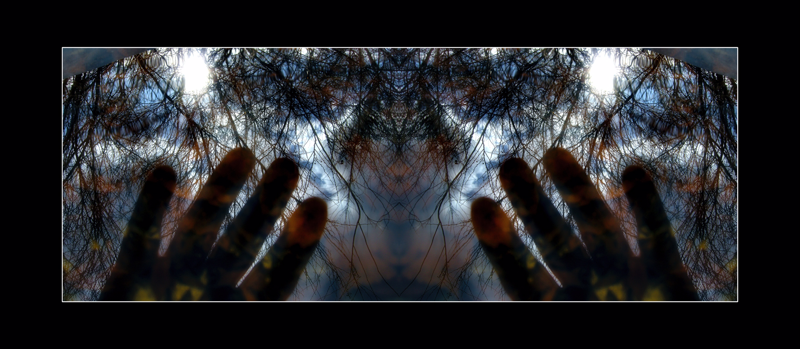

● Diaristic workflow as an artistic method
Traces between, Fragments from my Memories
Photography is often understood as a tool for remembering, for holding on to what has been.
Yet memory is never stable, and forgetting is not its opposite but its condition. Images do not preserve the past as it was; they linger where time has already begun to loosen its grip.
In this space between remembering and forgetting, photography becomes a contemplative practice. It slows attention and allows moments to remain unresolved — fragments rather than narratives, traces rather than evidence.
What matters here is not the event itself, but the quiet persistence of looking: returning, noticing, and staying with what does not fully explain itself. The photograph becomes less a record of something seen, and more a place where memory and time briefly rest.
Photodiary and memory - Traces Between
A long-term photographic practice exploring memory, repetition, and the fragile space between remembering and forgetting.
Back to beginning

Traces Between is a long-term photodiary project that examines how memory is shaped through repetition, duration, and everyday observation. Rather than focusing on singular events, the work develops through accumulation — images taken over time, returning to similar places, gestures, and moments.
360 panorama photography
360° panorama photography explored through repetition and experiment.
Back to beginning

I use 360° panorama photography as an experimental extension of my diaristic practice. Rather than aiming for immersive realism, the format allows me to observe space, presence, and repetition from within the image itself.
Working serially, I return to similar situations and viewpoints, allowing small variations to accumulate over time. The spherical image becomes less a spectacle and more a tool for reflection — a way to think about continuity, duration, and being present within the photographic frame.
Pinhole experiments
Pinhole experiments exploring playfulness and the low-tech / high-tech boundary.
Back to beginning

Randomness is not treated as a visual effect, but as a methodological choice. By loosening control and working with repeatable yet unstable systems, the practice allows images to emerge through variation rather than execution.
This approach supports a slower form of looking, where outcomes are observed rather than produced, and meaning accumulates through difference and return.